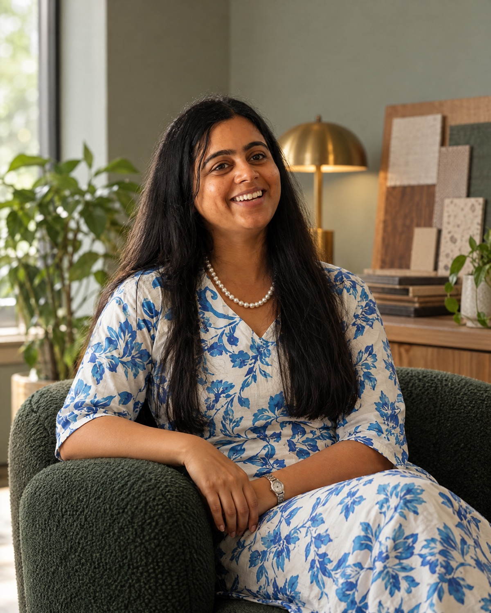
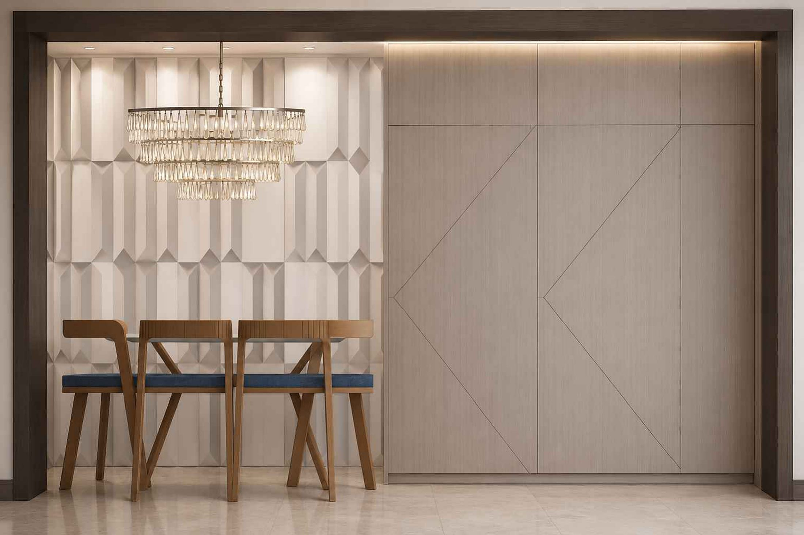
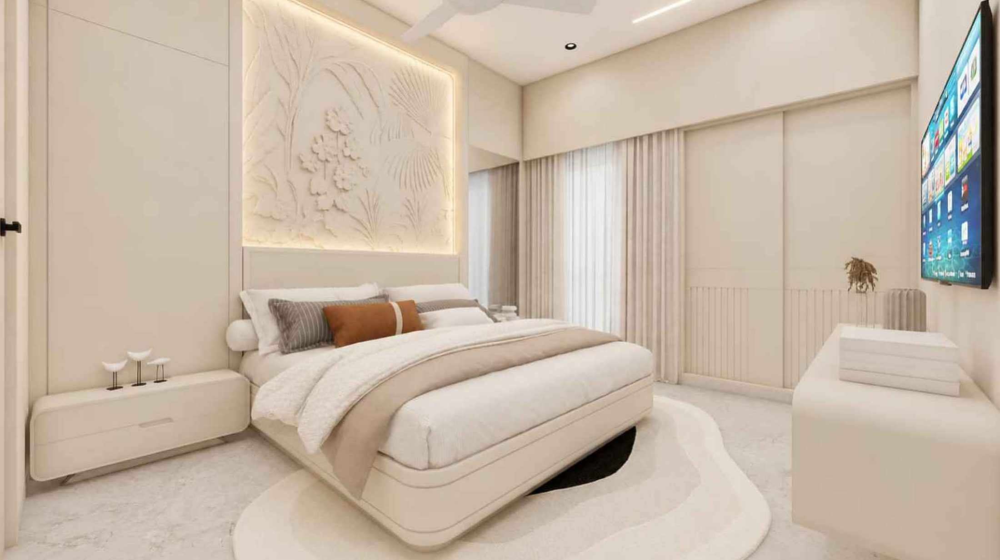
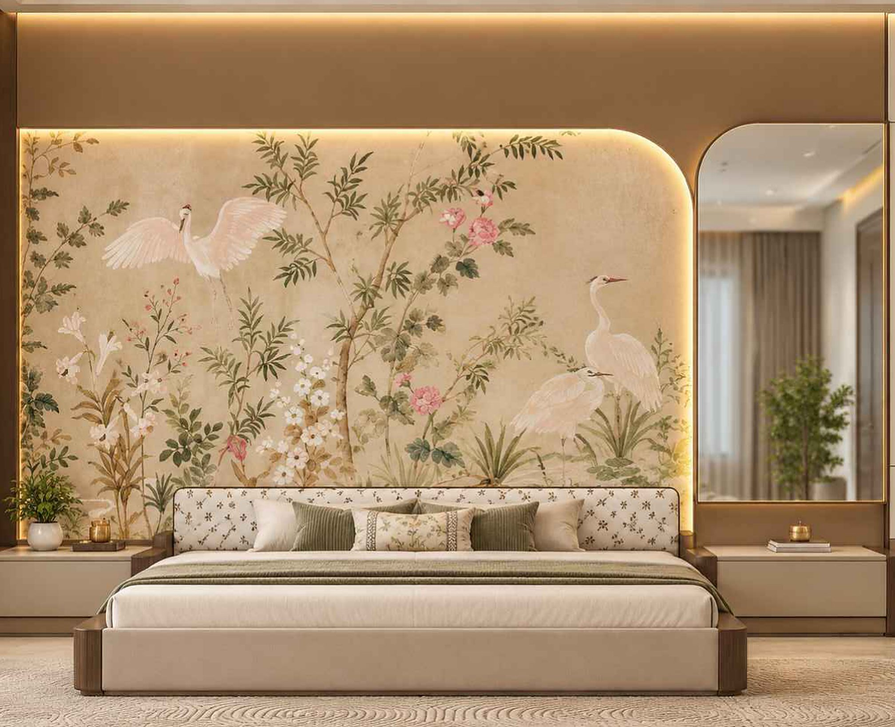

0107Completed, 2025
Siesta Villa
Named for the Spanish art of the afternoon pause. A home that presses pause on chaos, from the bedrooms to the living spaces.


Interior design studio · Surat, Gujarat
The studio
CLIS is an interior design studio in Surat. We design homes, stores and workplaces that feel calm, considered and unmistakably yours. One studio carries your space from the first sketch to the final cushion: planning, materials, site execution and styling.
The CLIS approachEvery CLIS project is led by Surbhi Kalsariya, from the first site visit to the day the cushions go on the sofa. The person who draws your home is the person who walks your site.
Meet the founder
It began with a childhood love of sketching. Tutoring and college internships turned a habit into a craft, and the craft into a firm of her own.
After relocating she rebuilt the practice from scratch, first from home and then from her own studio in Pal. Today CLIS works across residential and commercial projects, and most of them still arrive the same way: one happy client telling the next.
Drawing rooms long before she knew it was a profession.
Tutoring and internships through college; learning how drawings become buildings.
The first projects under her own name.
A new city and a practice rebuilt, first from home, then from her own office.
An interior studio in Pal, Surat: residential, retail, commercial and turnkey.
Residential · Retail · Commercial · Turnkey
Where ideas become spaces, and spaces become experiences.
Named for the Spanish art of the afternoon pause. A home that presses pause on chaos, from the bedrooms to the living spaces.
A design school that refuses to look like an office: a round lounge, booths in the planting and a stage with pebbles for chairs.
One arch, drawn three ways across three bedrooms, and a foyer wall of backlit gingko leaves to come home to.

Light from behind things: a glowing stone panel, an arch lit from its edge, and a dining wall of folded panels.
A family home on two floors and a salon on the third, where arched mirrors and a glowing shelf wall do the talking.

A pale, tonal home with one room allowed to be loud: a cricket-club wall for the son.

A compact home where the bedroom wall is a mural of cranes and blossom, and everything else stays quiet.
Homes, villas and apartments planned around the way you actually live.
Stores that slow people down, show the product well and make the brand feel bigger than the floor plan.
Offices and workplaces that are calm to work in and easy to be proud of.
One team for design, materials, site execution and styling. You get the keys to a finished space.
Four stages, one team. You always know what is being decided, what it costs and what happens next.
We start with how you live or work, then draw the space around it: layout, light and flow.
Materials, finishes, furniture and fittings, chosen together and seen in hand before anything is ordered.
Regular site visits and decisions made on the spot, so what gets built matches what was drawn.
The last five percent: art, plants, throws and light. Then we hand you a home, not a project.
A design academy in Adajan, a beauty salon in Virat Nagar, and family homes in Pal, at Aspire and at Janki Heights. Most of our work comes from people who have lived or worked in a CLIS space and told someone else about it.
See the projectsIf you're looking to create life in your space, let's talk.